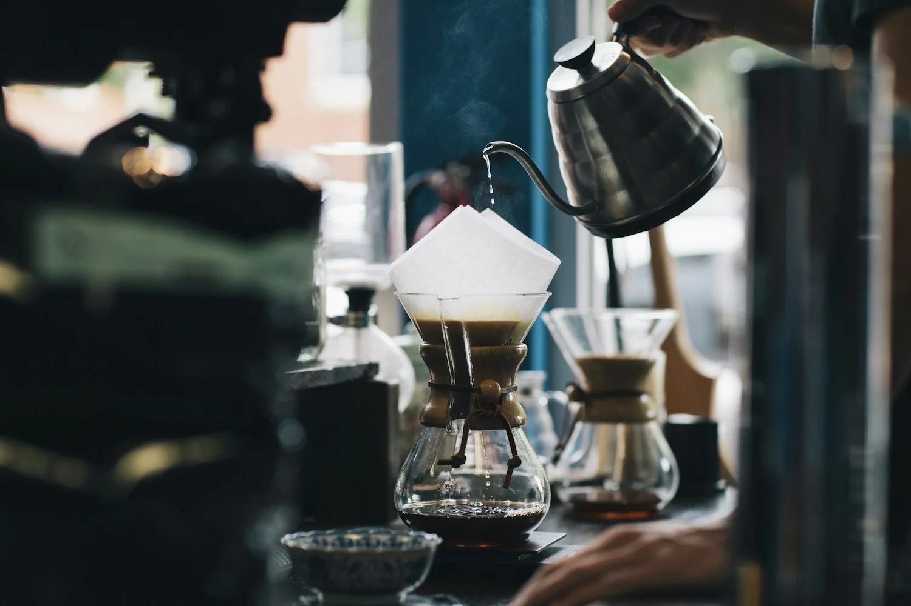
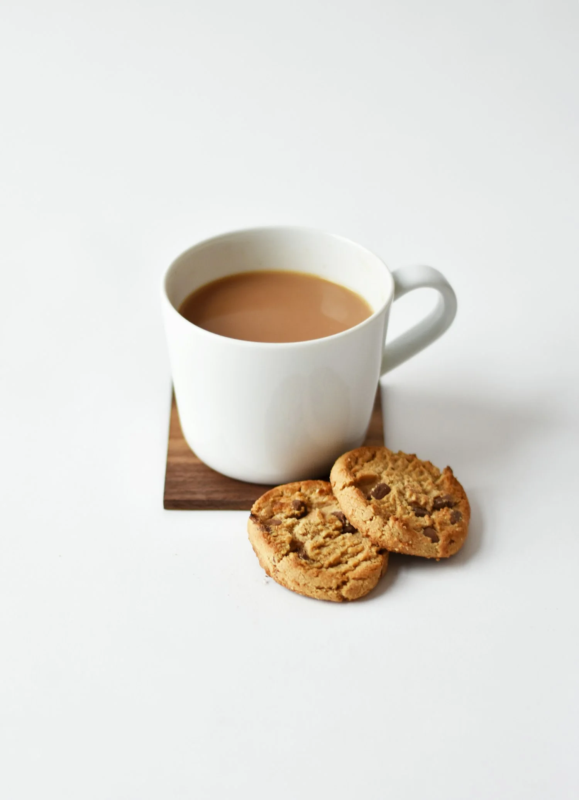

ATELIER COLLECTION / CAFE WEBSITES
一杯の時間を、
美しく。
写真と余白、やわらかな文字。
それぞれの街で見つけた、小さなお店のデザイン集です。
気になる一軒から、ゆっくりご覧ください。
100件 / 100件のデザイン
一致するデザインがありません。条件を変えてみてください。
 イメージ写真
イメージ写真東京・国立 / パンとカフェ
Uff Boulangerie & Café
デザインを見る イメージ写真
イメージ写真札幌・山鼻 / お茶と喫茶
日本茶カフェ pocha
デザインを見る イメージ写真
イメージ写真名古屋・桜山 / お菓子と喫茶
Collage.Co
デザインを見る イメージ写真
イメージ写真滋賀・守山 / コーヒーと喫茶
NOÖN Coffee & Lifestyle
デザインを見る イメージ写真
イメージ写真千葉・千葉神社前 / お菓子と喫茶
cafe & Ice Cream TORI.
デザインを見る イメージ写真
イメージ写真東京・武蔵境 / コーヒーと喫茶
cafe yoca
デザインを見る
イメージ写真宮城・仙台 榴岡 / コーヒーと喫茶
AIOI COFFEE
デザインを見る イメージ写真
イメージ写真福岡・笹丘 / ごはんとカフェ
喫茶 こさじいち
デザインを見る イメージ写真
イメージ写真京都・桂 / カフェとバル
the Fourth Avenue Cafe&Bar
デザインを見る イメージ写真
イメージ写真千葉・鎌ケ谷 / ごはんとカフェ
EGGPLANT CAFE
デザインを見る イメージ写真
イメージ写真北海道・旭川市 / ごはんとカフェ
Hoki Cafe
デザインを見る イメージ写真
イメージ写真北海道・札幌市 / コーヒーと喫茶
喫茶ブロンディー
デザインを見る イメージ写真
イメージ写真青森県・青森市 / カフェとバル
Asile
デザインを見るイメージ写真青森県・弘前市 / コーヒーと喫茶
中野珈琲店
デザインを見る イメージ写真
イメージ写真岩手県・紫波郡 / ごはんとカフェ
まんがめし喫茶 ひよこ堂
デザインを見るイメージ写真岩手県・盛岡市 / コーヒーと喫茶
喫茶 夜 桜山
デザインを見る イメージ写真
イメージ写真宮城県・多賀城市 / ごはんとカフェ
cafe MARM
デザインを見るイメージ写真宮城県・仙台市 / コーヒーと喫茶
蚯蚓
デザインを見るイメージ写真秋田県・横手市 / ごはんとカフェ
KO-MEGURI
デザインを見る イメージ写真
イメージ写真秋田県・秋田市 / ごはんとカフェ
きゃどぽんぽんじ〜な
デザインを見るイメージ写真山形県・南陽市 / ごはんとカフェ
CAFE & DINING Le Lien
デザインを見る イメージ写真
イメージ写真山形県・西置賜郡 / お菓子と喫茶
くまきち日和
デザインを見るイメージ写真山形県・飽海郡 / コーヒーと喫茶
なんでもない日に、踊ろうよ
デザインを見るイメージ写真福島県・いわき市 / コーヒーと喫茶
Green & Cafe HANA
デザインを見るイメージ写真福島県・会津若松市 / ごはんとカフェ
Re:sky
デザインを見るイメージ写真茨城県・常陸大宮市 / ごはんとカフェ
Quebec亭
デザインを見るイメージ写真栃木県・宇都宮市 / カフェとバル
FUFUFU
デザインを見るイメージ写真栃木県・宇都宮市 / ごはんとカフェ
my.Honey
デザインを見る イメージ写真
イメージ写真群馬県・高崎市 / お菓子と喫茶
Le’Chainon
デザインを見るイメージ写真群馬県・前橋市 / カフェとバル
アメリカンダイナーHOODHOUSE
デザインを見るイメージ写真群馬県・伊勢崎市 / コーヒーと喫茶
聖奈珈琲
デザインを見るイメージ写真埼玉県・深谷市 / コーヒーと喫茶
BOUNCE
デザインを見る
イメージ写真埼玉県・久喜市 / お菓子と喫茶
cafe tarte plus
デザインを見る千葉県・千葉市 / お菓子と喫茶
vigo
デザインを見るイメージ写真千葉県・柏市 / カフェとバル
ちょい呑み処ten
デザインを見るイメージ写真東京都・新宿区西新宿7- / お菓子と喫茶
溶時
デザインを見るイメージ写真神奈川県・中郡 / コーヒーと喫茶
Cache Cache
デザインを見るイメージ写真神奈川県・茅ヶ崎市 / コーヒーと喫茶
キッチンカーの古民家cafe Zen
デザインを見るイメージ写真新潟県・新潟市 / コーヒーと喫茶
喫茶 Perla
デザインを見るイメージ写真富山県・魚津市 / お菓子と喫茶
甘味処 食べ鯛
デザインを見る イメージ写真
イメージ写真石川県・加賀市 / ごはんとカフェ
mico
デザインを見る イメージ写真
イメージ写真石川県・小松市 / ごはんとカフェ
喫茶コビト
デザインを見るイメージ写真福井県・あわら市 / コーヒーと喫茶
our
デザインを見る イメージ写真
イメージ写真福井県・越前市 / ごはんとカフェ
カフェ花
デザインを見る イメージ写真
イメージ写真山梨県・南都留郡 / ごはんとカフェ
3POZZO cafe
デザインを見るイメージ写真山梨県・中巨摩郡 / ごはんとカフェ
cohaccha
デザインを見るイメージ写真山梨県・甲府市 / ごはんとカフェ
古民家カフェ 温
デザインを見るイメージ写真長野県・長野市 / お茶と喫茶
LAVENDER LANE Tea Room
デザインを見るイメージ写真長野県・松本市 / コーヒーと喫茶
カフェみなも
デザインを見る イメージ写真
イメージ写真岐阜県・各務原市 / ごはんとカフェ
anew egg sandwich & cafe
デザインを見るイメージ写真岐阜県・岐阜市 / お菓子と喫茶
Campanella
デザインを見るイメージ写真静岡県・伊東市 / コーヒーと喫茶
Cafe R･Dreams
デザインを見る イメージ写真
イメージ写真愛知県・名古屋市 / コーヒーと喫茶
BLOSSOM COFFEE HOUSE
デザインを見るイメージ写真愛知県・春日井市 / コーヒーと喫茶
Jinryo Coffee
デザインを見るイメージ写真愛知県・名古屋市 / お菓子と喫茶
PATISSERIE & 喫茶 KIGI
デザインを見るイメージ写真愛知県・名古屋市 / お菓子と喫茶
ルネル洋菓子店
デザインを見るイメージ写真三重県・鈴鹿市 / コーヒーと喫茶
7uts
デザインを見るイメージ写真三重県・名張市 / コーヒーと喫茶
riverside cafe ＆ sleep
デザインを見るイメージ写真滋賀県・近江八幡市 / ごはんとカフェ
カフェとごはん ひだまり
デザインを見る イメージ写真
イメージ写真滋賀県・大津市 / ごはんとカフェ
給食日和
デザインを見るイメージ写真京都府・京都市 / ごはんとカフェ
TOWZA DINER 1830
デザインを見るイメージ写真大阪府・大阪市 / お菓子と喫茶
DEL
デザインを見るイメージ写真大阪府・大阪市 / ごはんとカフェ
LOAFF
デザインを見るイメージ写真兵庫県・高砂市 / コーヒーと喫茶
on cafe
デザインを見るイメージ写真兵庫県・神戸市 / お菓子と喫茶
喫茶 Stern
デザインを見るイメージ写真奈良県・香芝市 / コーヒーと喫茶
キララカフェ
デザインを見るイメージ写真和歌山県・和歌山市 / ごはんとカフェ
good
デザインを見るイメージ写真和歌山県・有田郡 / コーヒーと喫茶
ponte
デザインを見るイメージ写真鳥取県・西伯郡 / コーヒーと喫茶
ara
デザインを見る イメージ写真
イメージ写真鳥取県・鳥取市 / ごはんとカフェ
おやじかふぇ
デザインを見る イメージ写真
イメージ写真島根県・松江市 / コーヒーと喫茶
喫茶 こつぶ
デザインを見る イメージ写真
イメージ写真島根県・出雲市 / お菓子と喫茶
空ト風ト
デザインを見るイメージ写真岡山県・津山市 / ごはんとカフェ
Bone&Peace
デザインを見るイメージ写真岡山県・倉敷市 / コーヒーと喫茶
Cafe Stand kinkin
デザインを見る イメージ写真
イメージ写真岡山県・倉敷市 / お菓子と喫茶
Pechunia cafe
デザインを見る イメージ写真
イメージ写真広島県・呉市 / ごはんとカフェ
chouchou cafe
デザインを見るイメージ写真広島県・廿日市 / ごはんとカフェ
curry＆cafe M
デザインを見るイメージ写真山口県・周南市 / ごはんとカフェ
Caffe Rieta
デザインを見るイメージ写真山口県・下関市 / ごはんとカフェ
sora16cafe
デザインを見る イメージ写真
イメージ写真徳島県・吉野川市 / パンとカフェ
鴨のひととき
デザインを見る イメージ写真
イメージ写真香川県・坂出市 / ごはんとカフェ
cafe amie
デザインを見る イメージ写真
イメージ写真香川県・高松市 / ごはんとカフェ
むれぐらし喫茶
デザインを見る イメージ写真
イメージ写真愛媛県・松山市 / ごはんとカフェ
Cafe&Lunch Box 一の魔法
デザインを見るイメージ写真愛媛県・松山市 / ごはんとカフェ
Country House.F
デザインを見るイメージ写真高知県・高知市 / ごはんとカフェ
NUiE LUCE food
デザインを見るイメージ写真福岡県・北九州市 / ごはんとカフェ
3年B組
デザインを見る イメージ写真
イメージ写真福岡県・京都郡 / パンとカフェ
BÄCKER
デザインを見るイメージ写真福岡県・北九州市 / コーヒーと喫茶
Cafe Bar えん
デザインを見るイメージ写真佐賀県・佐賀市 / ごはんとカフェ
カレーのち珈琲、ときどきワイン
デザインを見るイメージ写真長崎県・雲仙市 / ごはんとカフェ
goodstock unzen
デザインを見るイメージ写真熊本県・熊本市 / ごはんとカフェ
お米屋さんの薬膳米カフェ 田
デザインを見るイメージ写真熊本県・熊本市 / コーヒーと喫茶
にっこりキュート
デザインを見るイメージ写真熊本県・阿蘇郡 / お茶と喫茶
丸太茶屋
デザインを見るイメージ写真熊本県・熊本市 / ごはんとカフェ
芋男爵
デザインを見るイメージ写真大分県・大分市 / コーヒーと喫茶
上甲珈琲
デザインを見るイメージ写真宮崎県・宮崎市 / コーヒーと喫茶
sunnote coffee and bake
デザインを見るイメージ写真宮崎県・宮崎市 / コーヒーと喫茶
輪'z
デザインを見るイメージ写真鹿児島県・薩摩川内市 / パンとカフェ
TEDDY BAKERY
デザインを見るイメージ写真鹿児島県・鹿児島市 / パンとカフェ
実リ
デザインを見るイメージ写真沖縄県・那覇市 / お茶と喫茶
OKI ZEN
デザインを見るすべてmuginote studioによる自主制作の非公式デザイン案です。店舗の承認・依頼を受けた公式サイトではありません。写真はイメージ素材で、実店舗・実商品とは異なります。